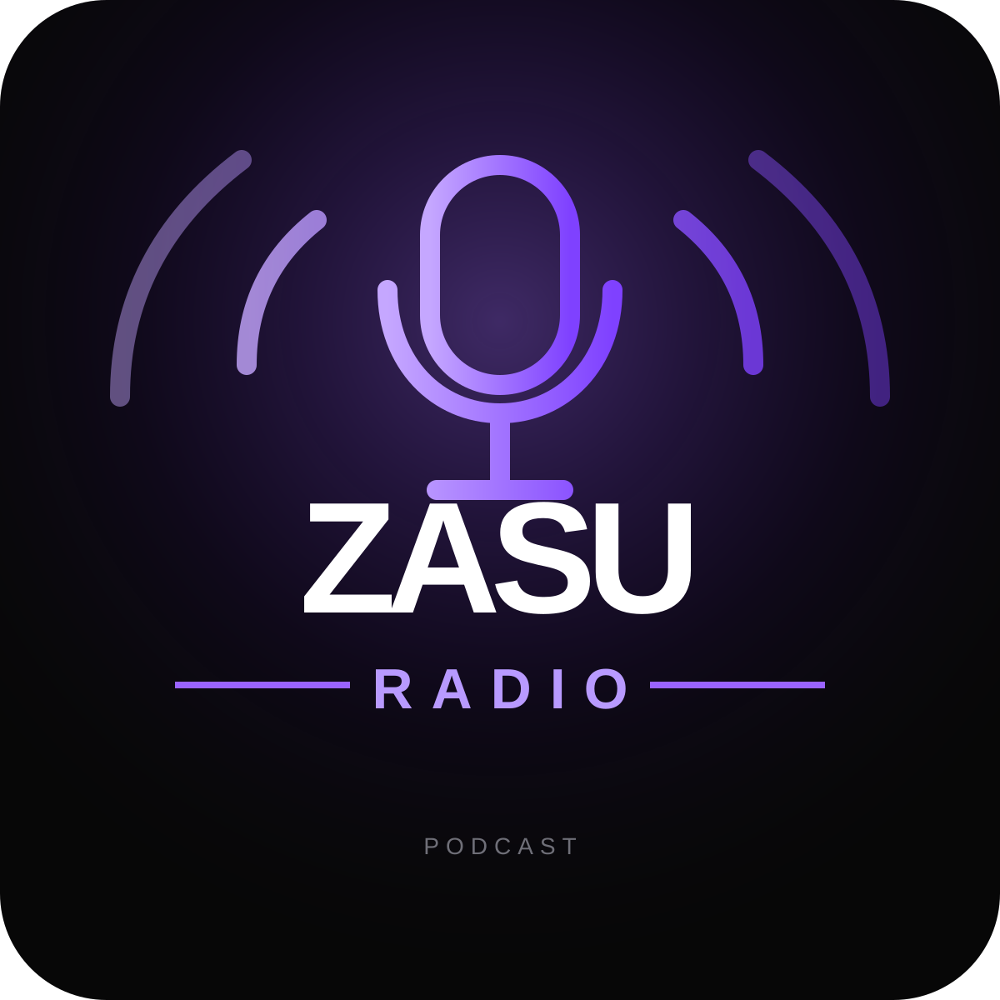

03
録っただけで終わるDAWでいいの？ ZASU DAWを作った理由。
今回は、現在開発中の歌ってみた専用DAW「ZASU DAW（ザスダウ）」をなぜ作っているのか、その思想について。録音後のEQ、コンプ、リバーブ、MIX、マスタリングなどの作業をできるだけソフト側に引き受けさせ、人間がもっと「歌う・作る」ことに時間を使えるDAWを目指しています。
※このエピソードでは、TAKA本人の声を学習したAI音声を使用しています。
AI、音楽、個人開発。
思いついたことを、ひとりで自由に話す。

今回は、現在開発中の歌ってみた専用DAW「ZASU DAW（ザスダウ）」をなぜ作っているのか、その思想について。録音後のEQ、コンプ、リバーブ、MIX、マスタリングなどの作業をできるだけソフト側に引き受けさせ、人間がもっと「歌う・作る」ことに時間を使えるDAWを目指しています。
ZASU DAWの開発協力者募集回。未加工ボーカル＋インスト音源を募集し、さまざまな歌声・録音環境で自動MIXやボーカル処理をテストします。
約30分の自分の声からAIボイスを作り、その声で一人語りラジオをスタート。AIで「一人でできること」がどこまで広がるのかを話した第1回。
TAKAがAI、テクノロジー、音楽制作、アプリやWebサービスの個人開発、気になったニュースなどをジャンルに縛られず話す一人語りポッドキャストです。
本人の音声から作成したAIボイスを活用。話したいテーマと内容は本人が決め、AIは番組を形にするための制作ツールとして使っています。